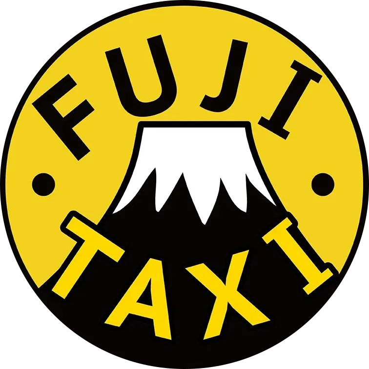

有限会社 富士タクシーデイサービス送迎業務における
時間貸切・定額制タクシー導入のご提案
送迎のプロに任せて、職員様は“本来の介護業務”に専念しませんか？
- 職員様の負担を軽減し、人手不足を解消
- 安全性・質の向上で、安心の送迎を実現
- 送迎コストの明確化と削減を同時に実現

ジャンボタクシー 最大9名

普通タクシー 最大4名
図1 送迎の課題と解決策
施設様が抱える課題
タクシー導入による解決策
職員の負担と人手不足
介護・事務の合間に運転をこなすため、疲弊や残業につながっている。送迎の完全アウトソーシング
プロのドライバーが運行を代行。職員様は施設でのケアや準備、または同乗しての介助に専念できます。月々の送迎コストの変動
燃料費の高騰や、日々の走行ルートの変更によって、毎月の経費が読みにくい。安心の「時間貸切・定額料金」
「1日○時間」の定額設定のため、ルート変更や渋滞があっても料金は一律。予算管理が容易になります。曜日や日による利用者の増減
利用者が少ない日でも、大きな送迎車を動かさなければならず無駄が生じる。車両サイズの最適化（ジャンボ＆普通車）
人数が多い日はジャンボ、少ない日は普通タクシーと使い分けが可能。少人数時はさらに抑えた定額料金が適用されます。車両の維持管理が大変
車検・保険・修理・駐車場代など、見えない固定費がかかる。維持管理の手間とコストを削減
車両の維持費や管理の手間が不要。固定費をすべて「時間貸切・定額」に一本化します。図2 見えない固定費を、定額料金に一本化
車両購入費車検任意保険
駐車場代修理費税金
燃料代消耗品ドライバー人件費
時間貸切・定額料金車両レンタル料、ドライバー人件費、燃料代、各種保険料、消耗品費一式を含みます
有限会社 富士タクシー1